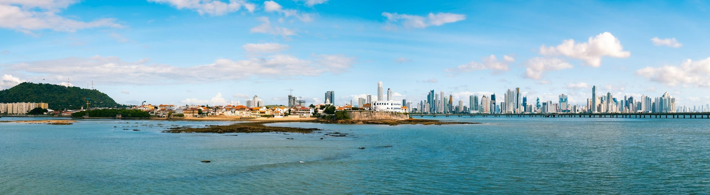
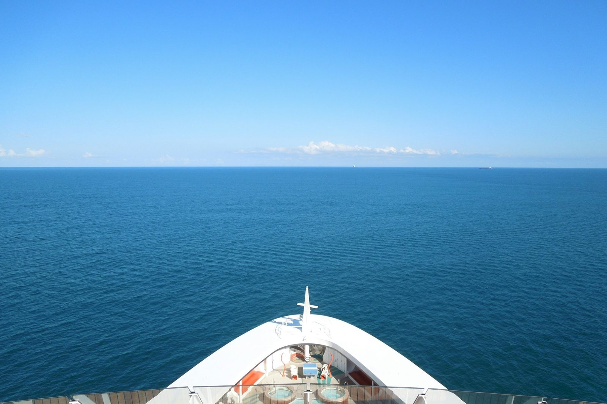

Embarque pela América Latina
Há saídas de Colón ou Cartagena para descobrir o sul do Caribe com o mar como parte da viagem.
Siga pelo mar até as Antilhas e descubra ilhas que parecem feitas para surpreender. Cada parada, uma paisagem. Cada dia, um novo motivo para querer ficar.
Há saídas de Colón ou Cartagena para descobrir o sul do Caribe com o mar como parte da viagem.
Aruba, Bonaire e Curaçao mostram que o Caribe tem mais de uma cor, mais de um ritmo e muito mais para descobrir.
A gente explica o roteiro, orienta sobre a documentação e ajuda você a decidir com clareza.
É em Colón, no litoral caribenho do Panamá, que muitas dessas viagens começam. O porto fica a uma curta viagem de carro da Cidade do Panamá, e o embarque acontece sem passar pelos Estados Unidos.
Quem chega com um dia de folga descobre que a capital vale a parada: as eclusas do Canal, as ruas do Casco Viejo e uma mesa sem pressa antes de subir a bordo. O embarque abre a porta; o Panamá pode virar mais um destino.
Cartagena é a outra porta de entrada e, em algumas saídas, também uma escala. A cidade murada guarda praças, sacadas floridas e fachadas em cores fortes que mudam de tom com a luz do fim do dia.
Entre o centro histórico e o mar, o ritmo é caribenho e colombiano ao mesmo tempo: música na rua, frutas em cada esquina e um pôr do sol que vale ver do alto das muralhas.
Bonaire tem outro ritmo. A água transparente não é só cenário. Sob ela, recifes e peixes tropicais revelam por que a ilha atrai quem gosta de mergulho e snorkel.
Sua costa integra um parque marinho protegido. Mesmo para quem prefere ficar fora d’água, há muito para observar entre a orla de Kralendijk e os vários tons do mar. Bonaire convida a desacelerar para perceber cada detalhe.
Em Aruba, o azul do mar disputa a atenção com a luz da ilha. Eagle Beach convida a estender o dia na areia branca, enquanto Oranjestad traz cor e movimento para além da praia.
E há um lado que surpreende: no Parque Nacional Arikok, a paisagem fica mais árida, rochosa e selvagem. É esse contraste que faz Aruba prender o olhar na chegada e continuar interessante depois da primeira foto.
Em Curaçao, o Caribe também acontece nas ruas. As fachadas coloridas de Willemstad acompanham o porto e contam parte da história de uma cidade reconhecida pela UNESCO.
Pelo litoral, enseadas e praias trazem de volta o azul que se espera do Caribe. Essa combinação de arquitetura, cultura e mar dá à ilha uma personalidade própria e deixa vontade de descobrir o que existe depois da próxima esquina.
Analisamos seu perfil para recomendar a melhor data e cabine no navio perfeito para você.
Checklist completo de tudo que você precisa levar, do passaporte às vacinas.
Dicas de passeios, moeda e logística local para você aproveitar cada segundo no Caribe.

Se a sua saída for por Colón, a Cidade do Panamá pode virar mais um destino: a escala monumental do Canal, as ruas do Casco Viejo, uma mesa sem pressa. Vale conversar sobre chegar antes ou ficar depois do cruzeiro.
Não, quando o voo e o itinerário não passam por território americano. Os roteiros desta campanha embarcam em Colón ou em Cartagena, e conferimos a rota completa com você antes de avançar.
Sim. Passaporte válido, as regras de entrada do Panamá ou da Colômbia e as condições da companhia são conferidos para cada viajante e cada saída. Sem visto americano não significa sem documentos.
Você voa até o Panamá ou até Cartagena, com um voo escolhido para não passar pelos Estados Unidos, e faz o check-in no porto de Colón ou de Cartagena, conforme a saída.
A ordem das escalas, a duração, o porto de embarque e o que a tarifa inclui, como bebidas e aéreo. Ao apresentar uma saída, mostramos o roteiro exato e o que está ou não incluído.

Conte ao Cruzeirista o que despertou sua vontade de ir. A gente apresenta as saídas, explica o que muda entre elas e acompanha você até a decisão.
Deixe seu contato e a equipe do Cruzeirista conversa com você sobre os roteiros e por onde começar.
A equipe do Cruzeirista entrará em contato para conversar sobre a viagem.
Não deixe para depois o Caribe que você sempre imaginou. O caminho até lá começa por uma conversa.
Falar pelo WhatsApp